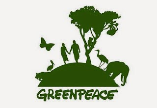

Grupos y sociedades que ayudan al cuidado del medio ambiente.

El planeta se encuentra tan dañado por el ser humano que han dejado un problema muy grande que parece no tener solucion. Pero afortunadamente existen distintos grupos ambientales.
A continuacion te dejo una lista con grupos ambientales y sus paginas web por si te apetece echarles un vistazo:
1-.Secretaría de Medio Ambiente y Recursos Naturales (SEMARNAT)
Es la dependencia del gobierno federal encargada de impulsar la protección, restauración y conservación de los ecosistemas y recursos naturales y bienes y servicios ambientales de México, con el fin de propiciar su aprovechamiento y desarrollo sustentable.
2-.Agencia de Seguridad, Energía y Ambiente (ASEA)
Órgano administrativo desconcentrado de la Secretaría de Medio Ambiente y Recursos Naturales, con autonomía técnica y de gestión, encargado de regular y supervisar la seguridad industrial, la seguridad operativa y la protección del medio ambiente en las actividades del sector hidrocarburos.
3-.Comisión Ambiental de la Megalópolis (CAME)
Organismo de coordinación política constituido el 23 de agosto del 2013, mediante un Convenio de Coordinación entre el Gobierno Federal por conducto de la Secretaría de Medio Ambiente y Recursos Naturales y los Gobiernos del Distrito Federal, Estado de México, Hidalgo, Morelos, Puebla y Tlaxcala, con el objeto de llevar a cabo la planeación y ejecución de acciones en materia de protección al ambiente, de preservación y restauración del equilibrio ecológico en la región que se extiende a las 16 Alcaldías de la Ciudad de México, y 224 municipios en total entre el Estado de México, Hidalgo, Morelos, Puebla y Tlaxcala.
4-.Comisión Nacional para el Conocimiento y Uso de la Biodiversidad (CONABIO)
Institución que genera inteligencia sobre nuestro capital natural; sirve de puente entre la academia, el gobierno y la sociedad; promueve que la conservación y manejo de la biodiversidad se base en acciones realizadas por la población local, la cual debe ser un actor central en ese proceso.
5-.Comisión Nacional Forestal (CONAFOR)
Es un Organismo Público Descentralizado cuyo objetivo es desarrollar, favorecer e impulsar las actividades productivas, de conservación y restauración en materia forestal, así como participar en la formulación de los planes, programas, y en la aplicación de la política de desarrollo forestal sustentable.
6-.Comisión Nacional del Agua (CONAGUA)
Organismo Administrativo Desconcentrado de la Secretaría de Medio Ambiente y Recursos Naturales, creado en 1989, cuya responsabilidad es administrar, regular, controlar y proteger las aguas nacionales en México.
7-.Instituto Mexicano de Tecnología del Agua (IMTA)
Organismo público descentralizado que se aboca a enfrentar los retos nacionales y regionales asociados con el manejo del agua y a perfilar nuevos enfoques en materia de investigación y desarrollo tecnológicos para proteger el recurso y asignarlo de manera eficiente y equitativa entre los distintos usuarios.
8-.Instituto Nacional de Ecología y Cambio Climático (INECC)
Genera e integra conocimiento técnico y científico e incrementa el capital humano calificado para la formulación, conducción y evaluación de políticas públicas que conlleven a la protección del medio ambiente, preservación y restauración ecológica, crecimiento verde, así como la mitigación y adaptación al cambio climático en el país.
9-.Procuraduría Federal de Protección al Ambiente (PROFEPA)
Tiene como tarea principal incrementar los niveles de observancia de la normatividad ambiental, a fin de contribuir al desarrollo sustentable y hacer cumplir las leyes en materia ambiental.
MAS TEMAS SOBRE EL MEDIO AMBIENTE:
MEDIO AMBIENTE Y SUSTENTABILIDAD
QUE PUEDO HACER PARA CUIDAR EL MEDIO AMBIENTE
QUE AFECTA AL MEDIO AMBIENTE?
POR QUE ES NECESARIO CUIDAR EL MEDIO AMBIENTE?